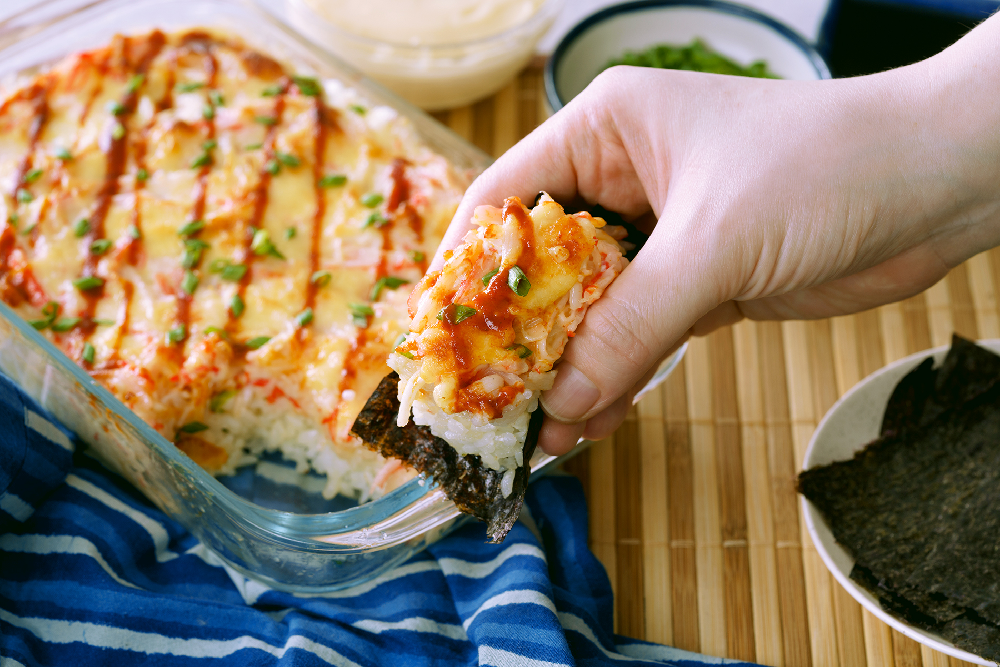

Suhsi Bake Rice

The latest asian trend
Honestly, I don't even know where this comes from but it's really popular in asia
right now. Compared to rolled sushi, the preperation is no big deal.
You need a bunch of things from your local asia market though.
Ingredients
Sushi Rice
- 4 cups freshly cooked rice
- 1 tablespoon sugar
- 1 teaspoon salt
Furikake
- ½ cup sesame seeds
- ½ cup Korean roasted seaweed crumbled or cut into small bits
- 1 teaspoon salt
- 1 teaspoon sugar
Creamy Topping
- 1 big ripe mango diced
- 1 medium cucumber diced
- 2 cups Kani shredded or cut into chunks
- 200 grams cream cheese
- ¼ cup Japanese mayonnaise
- 1 tablespoon Sriracha - adjust as desired
- salt
- 20 sheets Korean roasted seaweed sheets - or use nori sheets
Instructions
Sushi Rice
- Mix the rice vinegar, salt, and sugar in a small bowl, mix well.
Pop it in the microwave to warm until salt and sugar are totally dissolved.
- Pour the mixture to the freshly cooked rice and toss until evenly distributed.
Furikake
- Using very low heat, toast the sesame seeds until fragrant and golden. Mix the crumbled nori pieces. Season with salt and sugar
Creamy Topping
- In a bowl, combine the cream cheese, Japanese mayonnaise, and Sriracha, then mix.
- Add in the chopped Kani, ¾ of the mango, and ¾ of the cucumber. Make sure to leave enough mango and cucumber for additional layering later. Add salt to taste.
Baked Sushi Assembly
- In a rectangle pan (8x6in), spread the sushi rice evenly then lightly press down. Sprinkle a thin layer of Fukikake on top of rice until fully covered.
- Add the creamy topping then spread evenly. Sprinkle the remaining mango and cucumber bits and a bit more Furikake on top. Drizzle with Japanese Mayonnaise and Sriracha if desired.
- Bake at 200°C/390°F for 15 to 20 minutes. Enjoy by scooping a portion then wrapping it in nori.